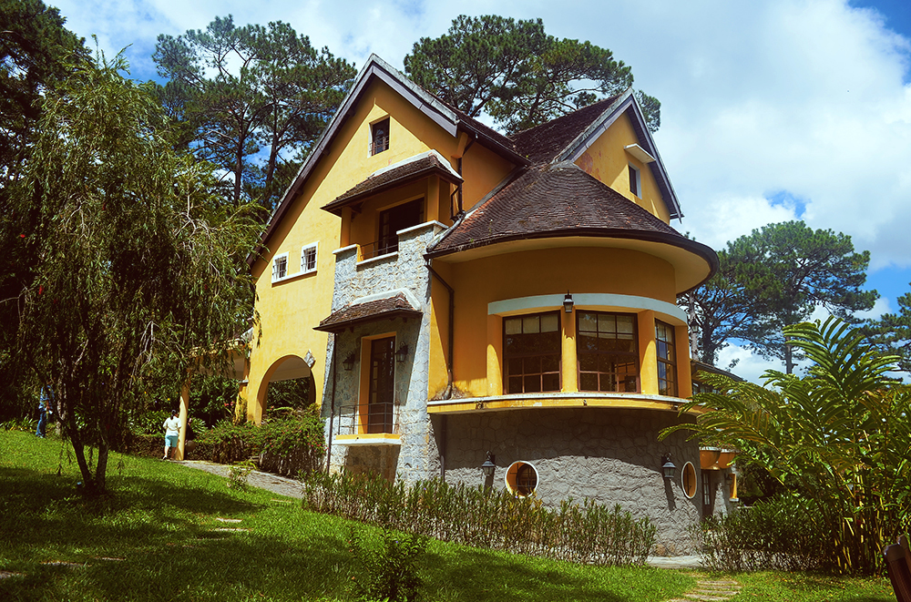
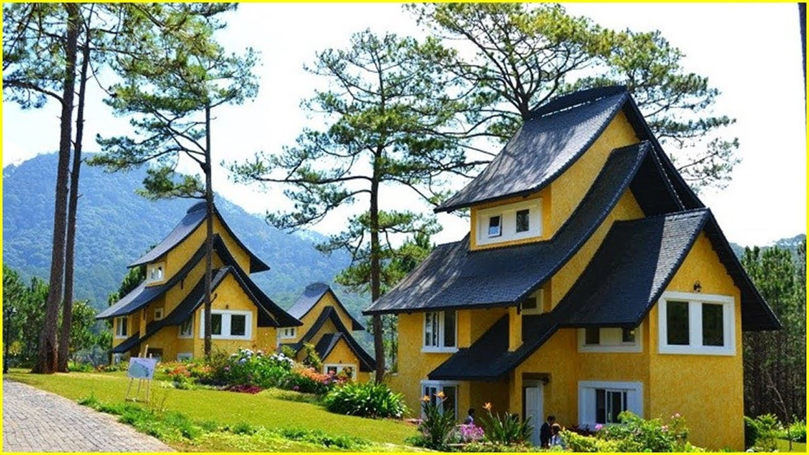
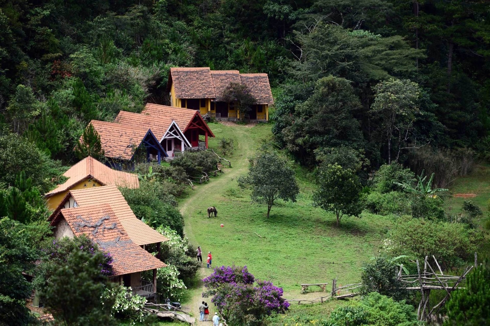

Làng cổ Đà Lạt, một địa danh không chỉ mang giá trị lịch sử mà còn chứa đựng những nét văn hóa đặc trưng của vùng đất cao nguyên Lâm Đồng, đã trở thành một điểm đến hấp dẫn đối với những ai yêu mến vẻ đẹp mộc mạc, yên bình. Đây là nơi hội tụ những ngôi nhà cổ, những con đường nhỏ uốn lượn, và những câu chuyện kể đầy sức sống của người dân địa phương.

Làng cổ Đà Lạt nằm cách trung tâm thành phố khoảng 15 km, tọa lạc giữa khung cảnh thiên nhiên yên bình với những ngọn đồi thoai thoải, cánh rừng thông bạt ngàn và dòng suối trong lành chảy qua. Địa danh này được xây dựng để tái hiện hình ảnh một ngôi làng truyền thống Việt Nam, kết hợp hài hòa giữa kiến trúc cổ kính và cảnh sắc thiên nhiên thơ mộng của Đà Lạt.

Không gian nơi đây mang nét thanh tịnh, khác xa sự náo nhiệt của thành phố. Bước vào làng cổ, du khách sẽ ngay lập tức cảm nhận được không khí trong lành, thoảng qua hương thơm dịu nhẹ của thông, cỏ cây và hoa lá. Những ngôi nhà gỗ cổ kính, mái ngói rêu phong, cùng những hàng cây xanh rợp bóng, tạo nên một bức tranh làng quê Việt Nam giản dị nhưng đầy sức hút.
Làng cổ Đà Lạt được xây dựng với mục đích lưu giữ và bảo tồn nét văn hóa truyền thống của Việt Nam. Địa danh này không chỉ là nơi để du khách tham quan mà còn là một bảo tàng sống động về đời sống, kiến trúc và phong tục tập quán của người dân Đà Lạt xưa.

Mỗi ngôi nhà trong làng đều được tái hiện dựa trên những kiến trúc đặc trưng của các vùng miền khác nhau, như nhà rường Huế, nhà sàn Tây Nguyên hay nhà ba gian Bắc Bộ. Những ngôi nhà không chỉ mang giá trị thẩm mỹ mà còn kể lại câu chuyện về lịch sử, văn hóa của từng vùng đất. Ngoài ra, các vật dụng sinh hoạt hàng ngày như cối xay lúa, chum nước, bàn ghế cổ, đều được bảo tồn và trưng bày trong từng ngôi nhà, giúp du khách hình dung rõ hơn về cuộc sống thường nhật của người Việt Nam xưa.